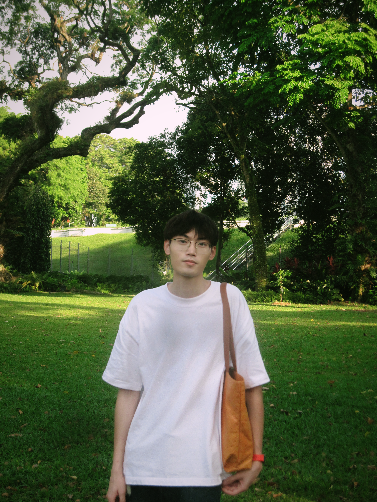
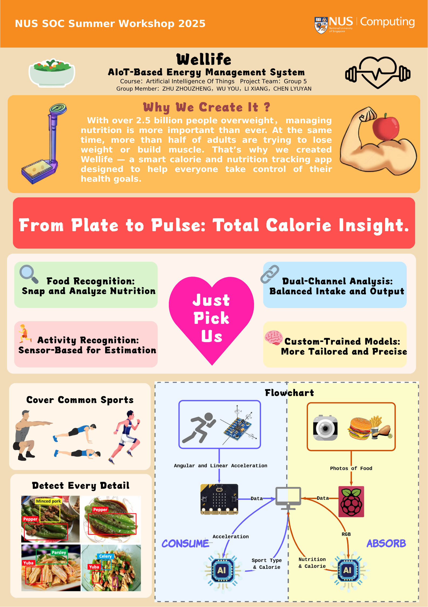
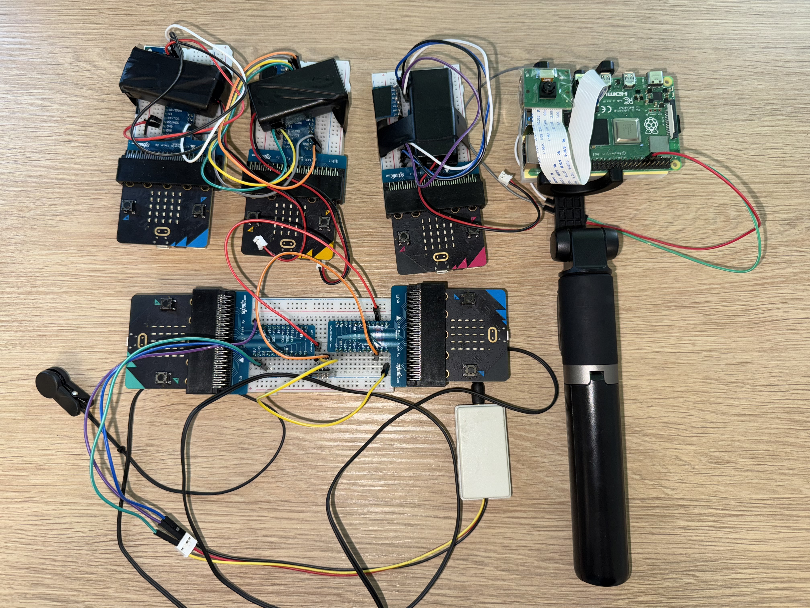
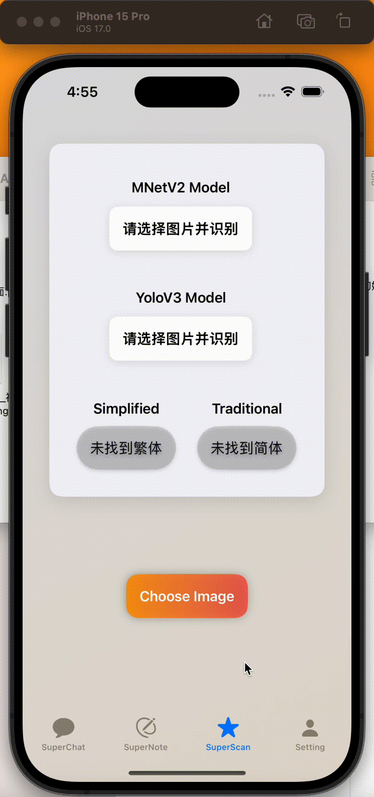
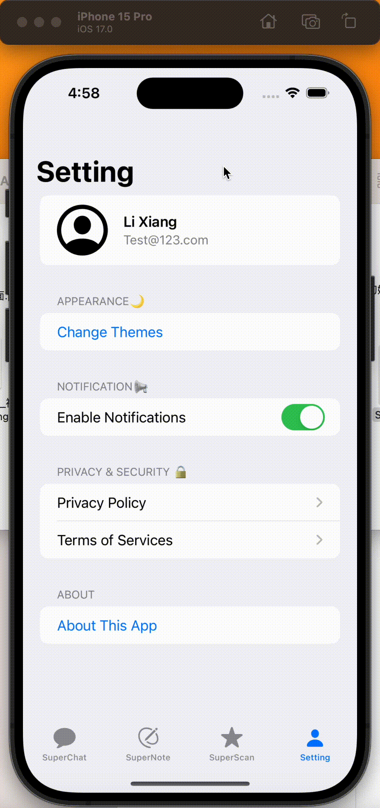
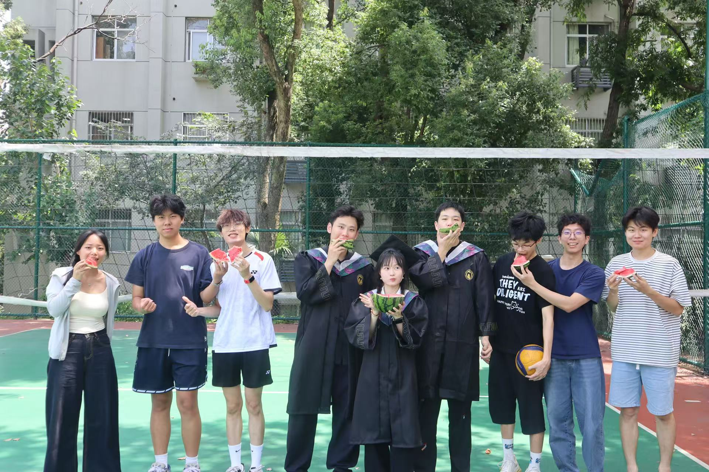
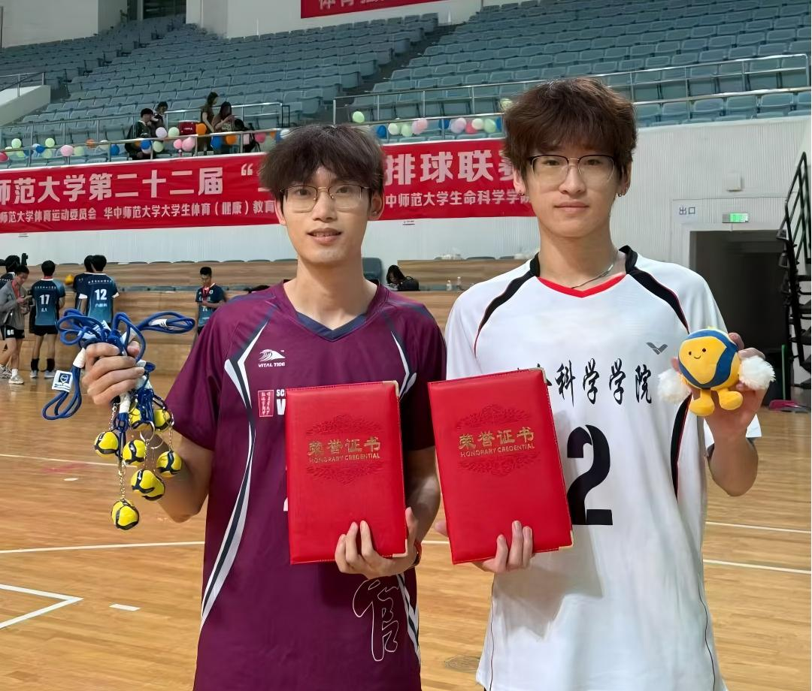
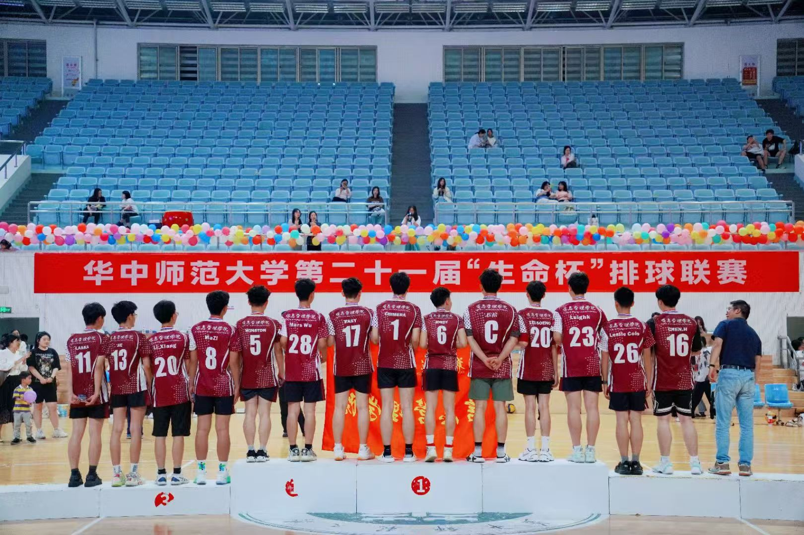
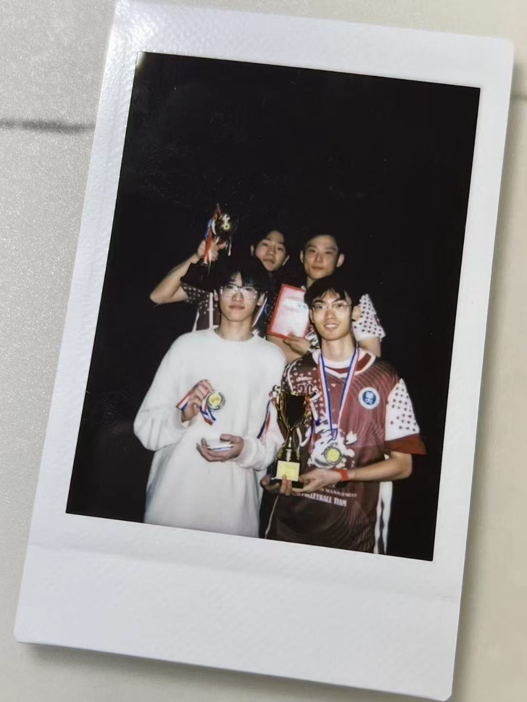
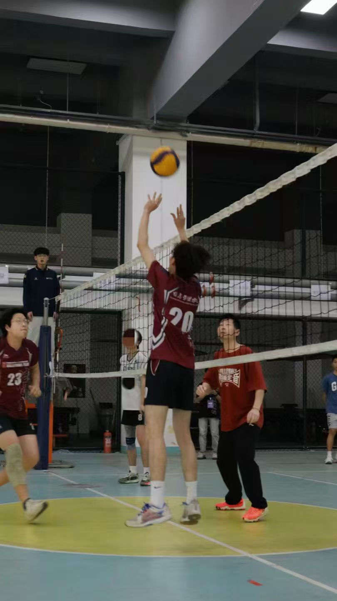

教育背景
南洋理工大学 (NTU) | 新加坡
- 硕士专业 建模与仿真
华中师范大学（CCNU） | 武汉，中国
- 信息管理与信息系统专业，管理学学士
- 专业课平均分：89.18/100；排名：1/32
- 核心课程：运筹学、算法设计、凸优化、计算机网络
梧州高级中学（WSHS） | 梧州，中国
科研经历
基于代价敏感引导图神经网络在医保欺诈网络中的应用
- 利用耦合机制和代价敏感学习构建新型医疗保障网络
- 因该项目为本人毕业设计，详细信息将在未来发布
基于引力模型和社会网络分析的湖北省高校图书馆互动研究
- 收集湖北省50所高校图书馆信息，构建邻接矩阵，利用Ucinet和Gephi构建互动网络
- 利用SNA指标分析馆际关系的结构特征
双命令循环在分离平台AS/RS上的运筹学研究
- 分析3D紧凑型AS/RS在I/O驻留点和随机存储策略下的运营效率
- 开发双命令旅行时间模型以表示水平和垂直平台的协调运动，并推导最佳货架尺寸参数
实习经历
AIoT项目研究实习生，新加坡国立大学计算机学院 | 新加坡
- 协调4人团队进度，包括硬件组装、模型训练、UI设计和前端开发
- 使用ResNet进行图像特征提取，使用LightGBM进行食物营养识别，在树莓派摄像头最终演示中达到100%准确率
- 使用前馈网络进行IMU传感器数据收集，实现实时运动分类
- 独立设计基于React的Web界面，包含数据仪表盘、食物分析和运动分析模块，并通过WebSocket连接后端系统实现实时运动分类和卡路里计算
- 开发简化的TCP滑动窗口协议，解决Micro Bit中IMU传感器传输过程中的广播数据丢失和乱序问题



AI开发实习生，保利中轻工业互联网有限公司 | 北京，中国
- 使用LLM标注各子公司和业务单元的绩效指标，通过SQL提取数据支持模型查询
- 使用GraphRAG构建包含3000多个指标的知识图谱，提取和关联指标、业务和子公司
- 调整少样本示例和模型参数以提高数值推理能力，减少数据驱动响应中的幻觉
- 使用Gephi可视化指标网络，动态高亮异常区域
项目经历
队长，LearnGo开发项目，2025移动应用创新大赛
- LearnGo App V1.0软件著作权（登记号：2025SR1265534）
- 使用Figma设计LearnGo原型，并在实施过程中改善用户体验
- 独立开发前端和后端系统，包括动画效果和模型训练
- AI智能学习助手，集成基于RAG的学科问答、多模态输入（语音、文本、文件、图像）和使用微调LLM自动生成笔记
- 使用YOLOv3、MobileNetV2实现多模态翻译和识别流程，进行实时图像翻译和多语种语音识别
- 🌐 LearnGo官方网站


组员，IGO数据驱动项目，香港大学商学院数据科学项目
- 基于RFM指标进行特征工程和数据清洗，使用图注意力网络（GAT）发现潜在用户，达到83%准确率
- 该项目在评比中获 Outstanding Award
荣誉奖项
2025年8月
2025移动应用创新大赛华中区域二等奖
2024年11月
Swift App开发认证用户
2024年6月
华为云开发者认证
2024年5月
2024年全国大学生英语竞赛C类二等奖
2024年3月
全国计算机等级考试三级（数据库）
2024年12月 & 2023年12月
华中师范大学三好学生（学业成绩前20%）
2024年10月 & 2023年10月
华中师范大学树人奖学金（综合成绩前30%）
2023年12月
第十五届全国大学生数学竞赛二等奖
运动

排球
季军队伍 & 2年明星队伍

羽毛球
6年经验
乒乓球
3年训练








